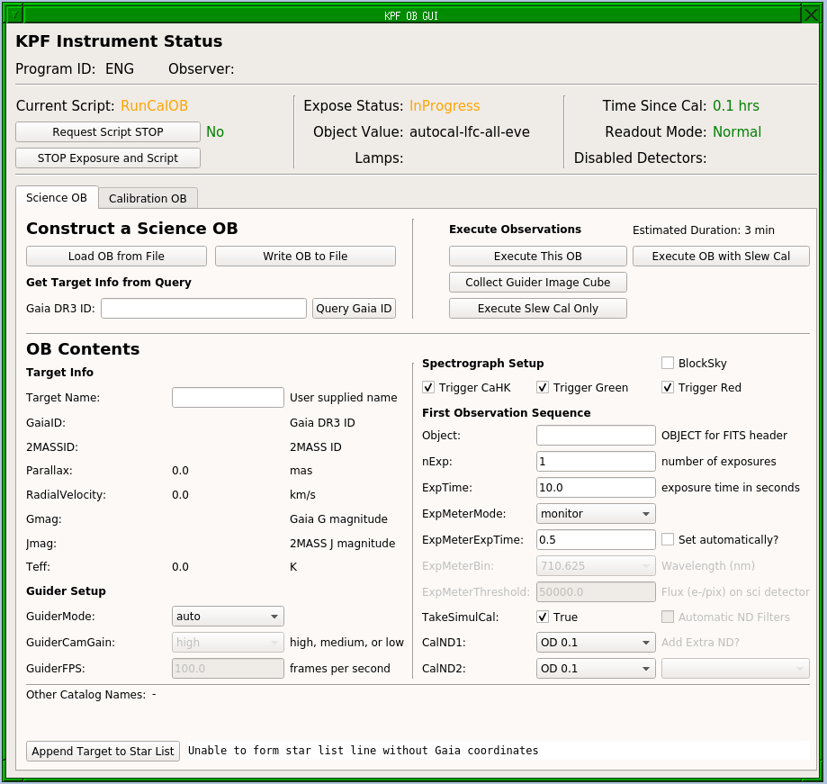

Building Observing Blocks (OBs)
The basic unit of KPF nighttime operations is the Observing Block (OB). An OB describes a single visit to a science target and the observations made there. The data contained in the OB is a set of keyword-value pairs. Observers can prepare OBs as text files which can be read in by the KPF software and executed or (once logged in to the KPF VNCs) they can use tools there to build the OBs and save them as files.
The data in an OB can be divided in to a few rough categories:
Target information: The OB will contain information about the target beyond what is in a typical Keck Star List entry in order to flow that information to the FITS header and the data reduction pipeline (DRP).
Instrument Setup: The OB will also contain information about how to configure the instrument for this set of observations.
Observations: Finally, the OB will contain a list of "observations" to be made of the target. For typical KPF observers, this will only have one entry, but multiple entries are supported. Each entry describes a set of exposures on the target and contains the information on how those exposures should be executed.
KPF OB GUI
A graphical tool has been built to help observers build their KPF OBs, it is launched automatically as part of the script to start all GUIs.

A screenshot of the KPF OB GUI.
The top section of the GUI, "Instrument Status" shows whether an instrument script (e.g. an observation or calibration set) is being run and allows users to request that script stop.
The middle section can be used to load an OB from a file, build an OB from scratch using a Gaia DR3 catalog query, save the OB to a file, or execute the OB.
The lower section is where a user can fill out the OB parameters as described in the "KPF Science OB Contents" section above.